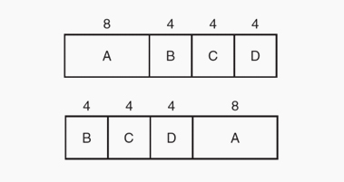

O algoritmo da Tarefa Mais Curto Primeiro (Shortest Job First) é um algoritmo em lote não preemptivo que supõe como previamente conhecidos todos os tempos de execução.
Quando várias tarefas igualmente importantes estiverem postadas na fila de entrada à espera de serem iniciados, o escalonador escolhe a Tarefa Mais Curta Primeiro.
Considere o caso de 4 tarefas, com tempos de execução a, b, c e d, respectivamente. A primeira tarefa termina no tempo a, a segunda no tempo a + b e assim por diante. O tempo médio de retorno é: (4a + 3b + 2c + d)/4.
Na parte superior da figura é mostrado a execução de quatro tarefas na ordem original. Já na parte inferior, é possível observar a execução na ordem tarefa mais curta primeiro.